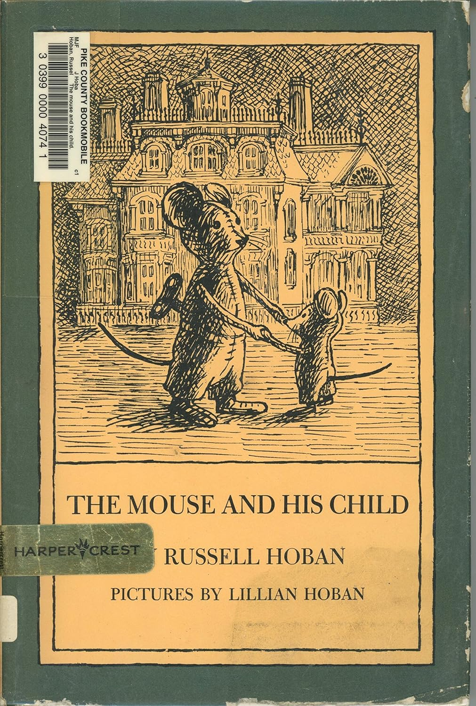
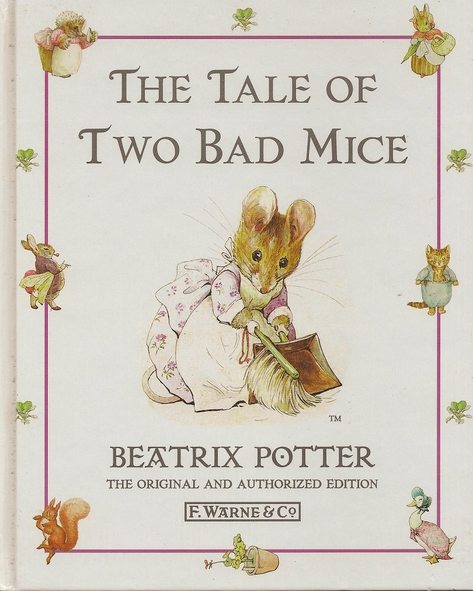
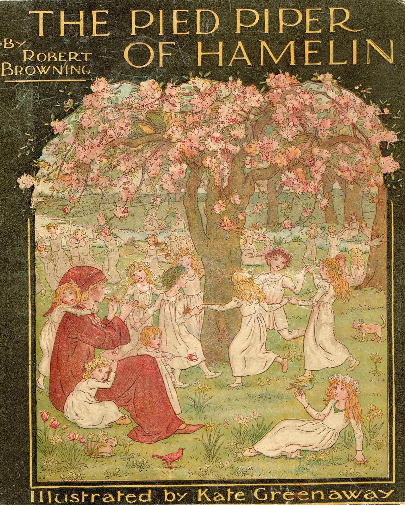
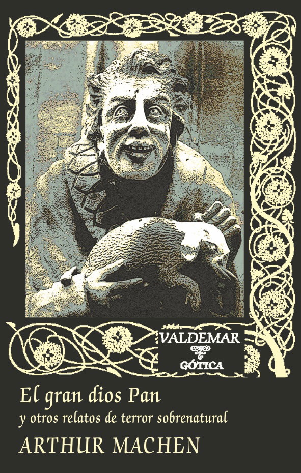
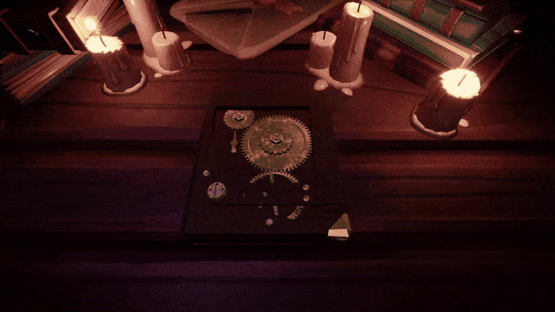
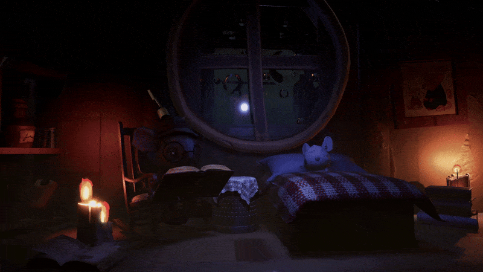
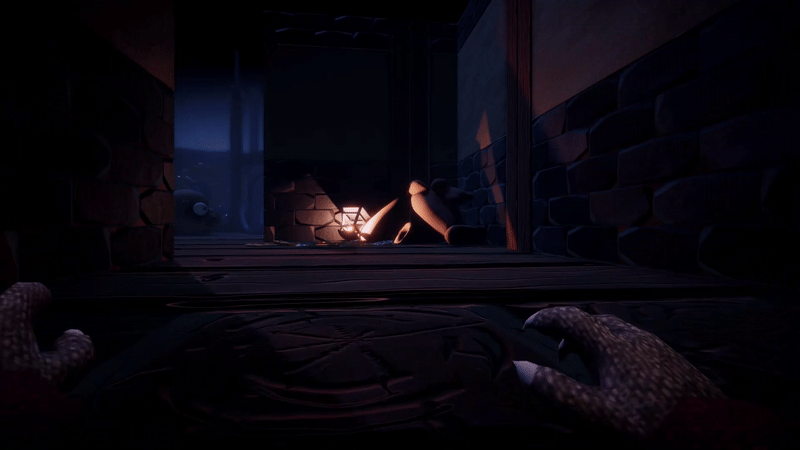
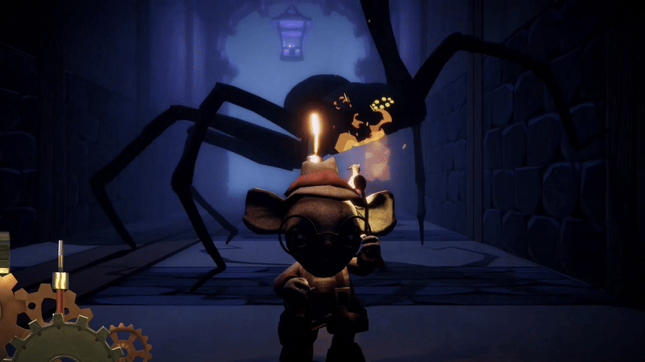
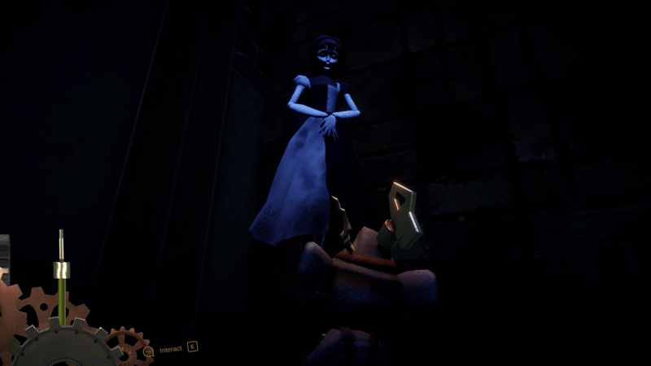

Unwound
Unwound is a stealth-horror game where you play as Mr. Benjamin, a wind-up mouse, exploring a surreal toybox world haunted by a villain known as The Catcher.
Watch the Trailer
This short trailer gives you a glimpse of the atmosphere and core gameplay of Unwound. I composed the music for the reel, and co-directed it with Jorge Mateo , who recorded all the in-game footage to make this possible.
Game Pitch
This elevator pitch was presented during the last session of the THU x KING mentorship program, along with the game trailer that served as our final deliverable as a team.
This page documents the game’s creative process: from early narrative concepts to level design and sound experiments. I’ll share sketches, gifs, logs, and developer insights that shaped the journey.
Development Process
Brainstorming & Literary Research
We defined The Mouse & His Child by Russel Hoban, The Tale of Two Bad Mice by Beatrix Potter and the Pied Piper legend as main inspirations. From there, I did deep research through my shelves, picking books like Pinocchio and dark tales from Arthur Machen, Ligotti, and Lovecraft. Style research focused on Northern European ambiance, localisms, and the distinct aesthetic of the SIX (Victorian era literature).




Core Pillars Definition
The game’s pillars were defined as "the weight of being a toy" — introducing a playful yet strategic wind-up bar mechanic representing toy stamina, and "storybook feel" — blending children's tale styles with sophisticated horror influences.


Character Design
The challenge was hybridizing the sweetness of Winnie the Pooh with the cutesy-horror aesthetics. The characters needed to balance innocence and dread effectively — and that’s when Mr. Benjamin came to life.

Mr. Benjamin’s Awakening
A narrative experiment where the villain unexpectedly gives life to the hero. A scene that defines the emotional tone of Unwound.
Aesthetic Decisions
Inspired by classic Resident Evil, alternating between fixed cameras with triggers and occasional first-person view to control player perspective. Environments were designed as decayed toy worlds — blending charm and horror through detailed set dressing.


Dynamic Dialogue System – The Maiden
This system governs how players interact with The Maiden, a narrative NPC whose cryptic language is revealed through proximity and player input. The interaction blends expressive pseudolanguage with human-readable translation, supported by a reusable dialogue manager in Unity.

Fictional Language Design
The fictional language spoken by The Maiden was constructed to emulate the feel of a sacred, long-forgotten hymn. It follows these design principles:
- Vowel-rich lexicon: Dominance of "a", "o", "aa", "ei", "uu" gives it a breathy tone.
- Glottal and fricative clusters: Sounds like "sh", "kh", "zh", and "kr" evoke ritualistic or harsh notes.
- Sentence melody: Lines rise and fall as if sung — a liturgical or incantatory rhythm.
- Soft pauses and echoes: Repetitions like “mmm-hrr” or “vel’tho…” suggest age and trance.
The result is a language that feels intuitive yet alien, musical yet threatening — in line with the dark fairytale tone of Unwound.
Sound Design Process
Each line of The Maiden's dialogue was processed to sound layered and eerie. The original recordings were duplicated and heavily modified using Audacity:
- Pitch shifting to create deeper harmonics and whispered overtones.
- Tempo adjustments to emphasize dragging, trance-like cadence.
- Reverb and echo for space and mystery.
- High-pass filtering to isolate breath and whisper frequencies.
The goal was to simulate an ethereal choir of voices — as if the Maiden speaks with more than one mouth, or through time itself.
Sound Design
I was in charge of everything related to sound during the project. My approach was programming a custom modular audio system that reacts dynamically to enemy states, stealth moments, environmental triggers and ground layers, enhancing atmosphere and player immersion. As the deadlines got tighter, we decided not to integrate FMOD into the project, but I developed a Unity Custom Editor to have dynamic control over my music and SFX stems. As the tool grew bigger, I ended up adding waveform visuals, sliders, handles and even a playhead for UX. I plan on expanding this tool in the future.